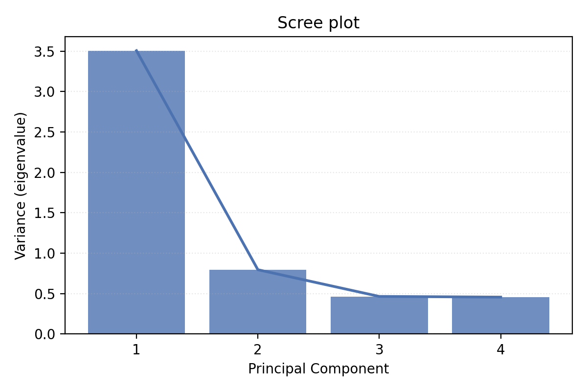
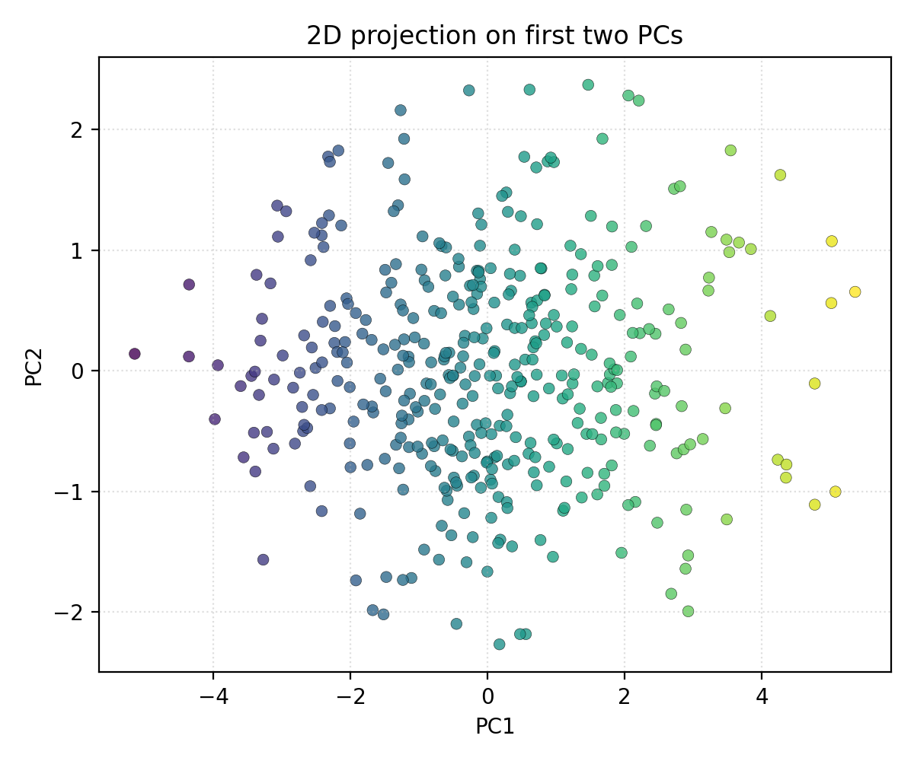
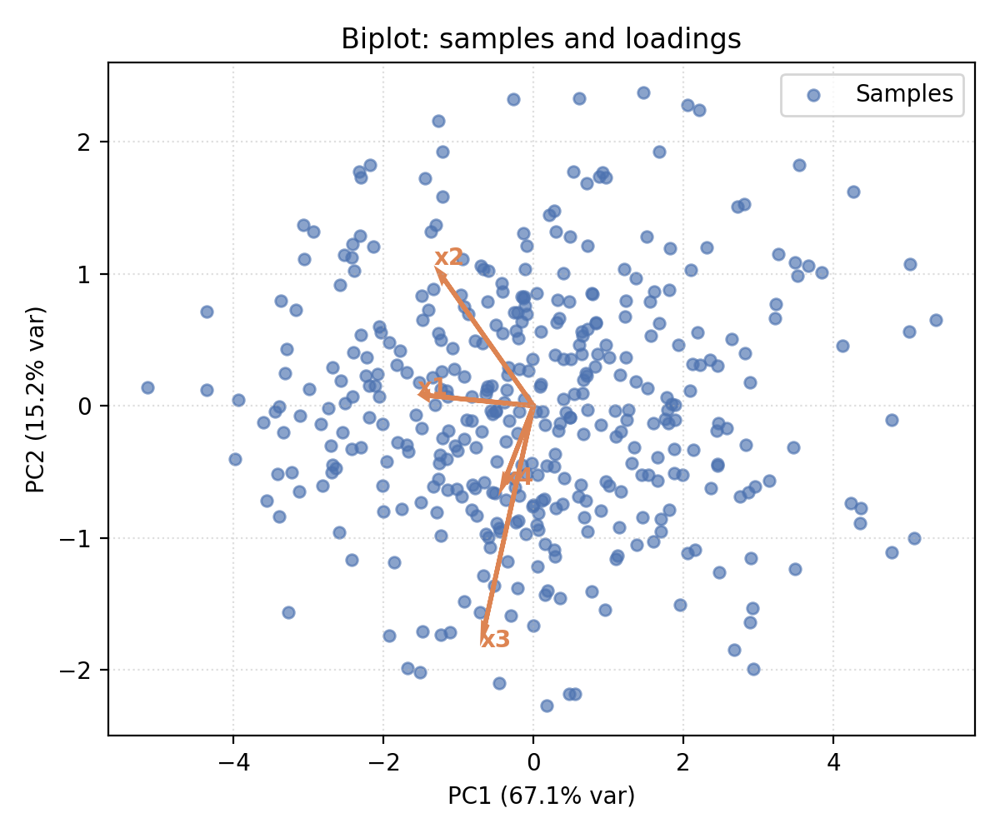
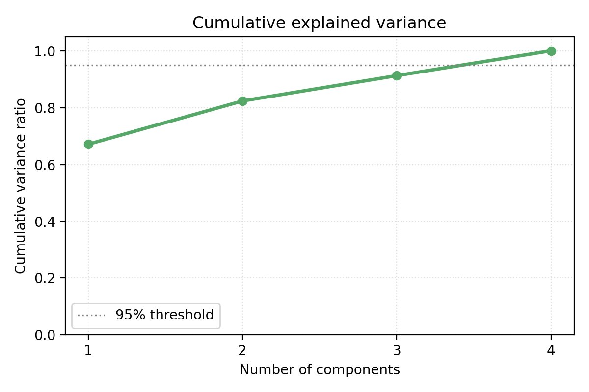

Principal Component Analysis (PCA)
Core Idea
PCA is an unsupervised dimensionality reduction technique that identifies the directions of maximum variance in data. It transforms high-dimensional data into a lower-dimensional space while preserving as much information (variance) as possible.
Main Goal: Find a set of orthogonal directions (principal components) along which the data has the highest variance, allowing us to:
Reduce dimensionality while retaining maximum information
Remove noise and redundancy
Visualize high-dimensional data
Accelerate downstream machine learning algorithms
Handle multicollinearity
Matrix Definition
Assume we have \(n\) samples and \(p\) features organized in a data matrix:
where each row is a sample and each column is a feature.
Centering: Subtract the mean from each feature (typically done as preprocessing):
where \(\boldsymbol{\mu} = \frac{1}{n}\sum_{i=1}^n \mathbf{x}_i\) is the mean vector and \(\mathbf{1}\) is a column vector of ones.
Sample Covariance Matrix:
The covariance matrix captures the variance and correlations in the data:
Each element \(C_{ij}\) represents:
\(C_{ii}\) = variance of feature \(i\)
\(C_{ij}\) = covariance between features \(i\) and \(j\)
Algebraic Definition
Principal Components are defined as:
First PC: The direction \(\mathbf{w}_1\) that maximizes variance:
\[\mathbf{w}_1 = \arg\max_{\mathbf{w}: \|\mathbf{w}\|_2=1} \frac{1}{n-1}\left\|\mathbf{X}_c \mathbf{w}\right\|_2^2 = \arg\max_{\mathbf{w}: \|\mathbf{w}\|_2=1} \mathbf{w}^\top \mathbf{C} \mathbf{w}\]Subsequent PCs: The \(k\)-th PC is the direction of maximum variance orthogonal to the first \(k-1\) PCs:
\[\mathbf{w}_k = \arg\max_{\mathbf{w}: \|\mathbf{w}\|_2=1, \mathbf{w}^\top \mathbf{w}_j = 0 \text{ for } j < k} \mathbf{w}^\top \mathbf{C} \mathbf{w}\]
Solution via Eigendecomposition:
The directions \(\{\mathbf{w}_1, \mathbf{w}_2, \ldots, \mathbf{w}_p\}\) are the eigenvectors of \(\mathbf{C}\), and the corresponding eigenvalues \(\lambda_1 \geq \lambda_2 \geq \cdots \geq \lambda_p \geq 0\) represent the variance explained along each principal component:
where \(\mathbf{W} = [\mathbf{w}_1 \mid \mathbf{w}_2 \mid \cdots \mid \mathbf{w}_p]\) and \(\boldsymbol{\Lambda} = \text{diag}(\lambda_1, \lambda_2, \ldots, \lambda_p)\).
Transformed Data (Scores):
Project the centered data onto the first \(k\) principal components:
where \(\mathbf{W}_k\) contains the first \(k\) columns (eigenvectors) of \(\mathbf{W}\).
Key Tests and Definitions
Variance Explained by Each Component:
The variance explained by the \(k\)-th component is proportional to its eigenvalue:
Cumulative Variance Explained:
This quantity helps determine how many components are needed to explain a desired percentage (e.g., 95%) of the variance.
Kaiser Criterion:
Keep components with eigenvalues \(\lambda_k \geq 1\) (assumes standardized features). Eigenvalues less than 1 contribute less variance than a single original feature.
Scree Plot:
A plot of eigenvalues or cumulative variance explained against component number. Look for an “elbow” where additional components provide diminishing returns.
Loadings:
The correlation between original features and principal components:
High loadings indicate which features contribute most to each component.
Biplot:
A visualization showing both samples (scores) and features (loadings) simultaneously, revealing relationships between variables and observations.
Optimal Number of Dimensions
Choosing the right number of components \(k\) is crucial. Several approaches exist:
1. Explained Variance Threshold
Select \(k\) such that the cumulative variance explained exceeds a threshold (commonly 95%):
2. Scree Plot / Elbow Method
Plot eigenvalues or cumulative variance and look for an “elbow” where the curve flattens.
3. Kaiser Criterion
Retain components with \(\lambda_k \geq 1\) (if features are standardized).
4. Cross-Validation
For supervised tasks, use cross-validation to select \(k\) that minimizes prediction error on a downstream task.
5. Domain Knowledge
Consider the practical constraints:
Visualization needs (2D or 3D for plotting)
Computational cost
Interpretability requirements
Step-by-Step Example: 3D to 1D
Let’s walk through a concrete example reducing 3D data to 1D.
Step 1: Original 3D Data
Consider three correlated features:
Step 2: Center the Data
Compute means: \(\mu_1 = 2.84, \mu_2 = 4.26, \mu_3 = 5.94\)
Step 3: Compute Covariance Matrix
Step 4: Eigendecomposition
Compute eigenvalues and eigenvectors of \(\mathbf{C}\):
Step 5: Variance Explained
Since the first component explains ~97% of variance, we choose \(k=1\).
Step 6: Project onto First PC
Result: The original 3D data is now represented as a 1D array, with each entry being the projection of the corresponding sample onto the direction of maximum variance.
Reconstruction (if needed):
The reconstructed data captures the main direction of variation but loses information along the other two principal components.
NumPy Implementation
Below is a minimal NumPy implementation of PCA with functions for fitting, transforming, and analyzing results.
import numpy as np
class PCA:
"""Principal Component Analysis"""
def __init__(self, n_components=None):
self.n_components = n_components
self.mean_ = None
self.components_ = None
self.explained_variance_ = None
self.explained_variance_ratio_ = None
def fit(self, X):
"""
Fit PCA model to data.
Parameters:
X : (n_samples, n_features)
"""
# Center the data
self.mean_ = np.mean(X, axis=0)
X_centered = X - self.mean_
# Compute covariance matrix
cov = np.cov(X_centered.T)
# Eigendecomposition
eigenvalues, eigenvectors = np.linalg.eigh(cov)
# Sort by eigenvalues (descending)
idx = np.argsort(eigenvalues)[::-1]
eigenvalues = eigenvalues[idx]
eigenvectors = eigenvectors[:, idx]
# Select number of components
if self.n_components is None:
self.n_components = X.shape[1]
self.components_ = eigenvectors[:, :self.n_components]
self.explained_variance_ = eigenvalues[:self.n_components]
self.explained_variance_ratio_ = (
self.explained_variance_ / np.sum(eigenvalues)
)
return self
def transform(self, X):
"""Project data onto principal components."""
X_centered = X - self.mean_
return X_centered @ self.components_
def fit_transform(self, X):
"""Fit PCA and transform data."""
return self.fit(X).transform(X)
def inverse_transform(self, Z):
"""Reconstruct data from scores."""
return Z @ self.components_.T + self.mean_
def get_cumulative_variance(self):
"""Get cumulative explained variance ratio."""
return np.cumsum(self.explained_variance_ratio_)
# Example usage
rng = np.random.default_rng(42)
X = rng.normal(loc=0, scale=1, size=(100, 3))
# Fit PCA to keep 2 components
pca = PCA(n_components=2)
Z = pca.fit_transform(X)
print(f"Explained variance ratio: {pca.explained_variance_ratio_}")
print(f"Cumulative variance: {pca.get_cumulative_variance()}")
# Reconstruct
X_reconstructed = pca.inverse_transform(Z)
reconstruction_error = np.mean((X - X_reconstructed) ** 2)
print(f"Reconstruction error: {reconstruction_error:.4f}")
Visualizations and Interpretations
{kind=link}

{kind=link}

{kind=link}

{kind=link}

Common Pitfalls and Best Practices
1. Standardization
Always standardize features (zero mean, unit variance) before PCA if they have different scales. Features with large variance will dominate principal components:
2. Interpretation of Components
Principal components are linear combinations of all original features. They may not have intuitive interpretations in complex datasets.
3. Information Loss
Reducing dimensionality always discards information. Monitor reconstruction error to ensure acceptable performance.
4. Computational Cost
Eigendecomposition of large covariance matrices can be expensive. For \(n \gg p\), consider SVD directly on the data matrix:
where \(\mathbf{V}\) are the principal components and \(\mathbf{U}\boldsymbol{\Sigma}\) are the scores.
5. Outliers
Outliers can inflate variance and distort principal components. Consider robust PCA variants or outlier removal.
Applications
Exploratory Data Analysis: Visualize high-dimensional data in 2D/3D
Feature Engineering: Create uncorrelated features for downstream models
Denoising: Remove low-variance components (assumed to be noise)
Image Compression: Reduce storage while preserving visual quality
Gene Expression Analysis: Identify dominant patterns in biological data
Anomaly Detection: Detect samples that project far from the data cloud
References and Further Reading
Pearson, K. (1901). On lines and planes of closest fit to systems of points in space. Philosophical Magazine, 2(11), 559–572. Classic foundational paper introducing PCA (then called “principal axes”).
Jolliffe, I. T. (2002). Principal Component Analysis (2nd ed.). Springer-Verlag. Comprehensive textbook covering theory, applications, and extensions of PCA with extensive examples.
Turk, M., & Pentland, A. (1991). Eigenfaces for recognition. Journal of Cognitive Neuroscience, 3(1), 71–86. Landmark application of PCA to face recognition.
Wold, S., Esbensen, K., & Geladi, P. (1987). Principal component analysis. Chemometrics and Intelligent Laboratory Systems, 2(1-3), 37–52. Practical guide to PCA in chemometrics with real-world examples.
Hastie, T., Tibshirani, R., & Friedman, J. (2009). The Elements of Statistical Learning: Data Mining, Inference, and Prediction (2nd ed.). Springer. Chapter on unsupervised learning covers PCA in a modern statistical learning context.
Belkin, M., & Niyogi, P. (2003). Laplacian eigenmaps for dimensionality reduction and data representation. Neural Computation, 15(6), 1373–1396. Extension of PCA using graph-based methods for nonlinear dimensionality reduction.